從DNA到魅力到設計
三階段轉譯：抽象 → 感性 → 具象
3.1三個階段：理解地方、表達地方、實踐地方#
張文山的簡報把地方創生的轉譯過程分成三個階段（圖3.1）：地方DNA（本質的萃取）、地方魅力（把本質轉譯成魅力）、地方設計（把魅力落地成行動）。三個階段的關係很簡單：DNA經過「價值與敘事的轉譯」成為魅力；魅力再經過「設計的落地化」成為看得見、用得著、能體驗的成果。
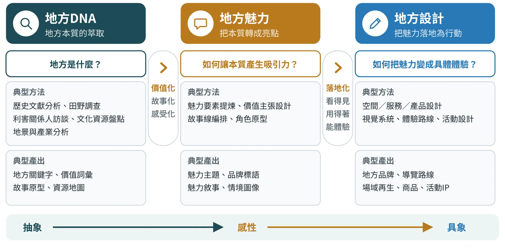
每個階段都有自己要回答的問題與典型的做法，整理在下表（表3.1）。這張表是全書方法的骨架：後面第二篇的六個階段，都可以放回這三格裡。
| 階段 | 核心問題 | 目的 | 目標 | 典型方法 | 典型產出 |
|---|---|---|---|---|---|
| 地方DNA | 地方的本質是什麼？ | 找出地方獨特且不可取代的根源特質 | 形成對地方的共識性「本質描述」 | 歷史文獻分析、田野調查、利害關係人訪談、文化資源盤點、地景與產業分析 | 地方關鍵字、價值詞彙、地方故事原型、地方資源地圖 |
| 地方魅力 | 如何讓本質產生吸引力？ | 將DNA轉化為能被理解、感受、吸引的亮點 | 建立地方的核心敘事、主題風格、形象識別 | 魅力要素提煉、價值主張設計、故事線編排、角色原型塑造 | 魅力主題、品牌標語、魅力敘事、情境圖像、主題曲線 |
| 地方設計 | 如何把魅力轉成具體體驗？ | 以設計手法落實魅力，使其能被看見與使用 | 形成對外一致、對內共鳴的地方體驗與品牌化呈現 | 空間、服務、產品設計、視覺系統、體驗路線、活動設計、策略規劃 | 地方品牌、導覽路線、場域再生、商品化成果、活動IP、完整地方識別系統 |
表中「對外一致、對內共鳴」是重點：設計不只是做給遊客看，也要讓居民覺得「這就是我們」。
3.2地方魅力：價值化、故事化、感受化#
地方魅力不是「風景好看」，也不是一句漂亮的標語。依簡報的說法，魅力是把DNA轉化為「能被理解、感受、吸引」的亮點，讓外部人（遊客、投資者）與內部人（居民、青年）都能理解並被吸引。要做到這一點，需要經過三道工序。
本書把簡報中的「價值化、故事化、感受化」整理成三道工序（圖3.2），每一道各有一個核心問題：
- 價值化：這個DNA為什麼重要？對誰重要？目的是找出可以對外說明的「價值主張」。
- 故事化：用什麼線索把它說清楚？目的是找出一條「主敘事」，而不是堆疊十個故事。
- 感受化：人會看到、聽到、摸到什麼？目的是把抽象的價值轉成可以被五感經驗的情境、主題風格與形象。
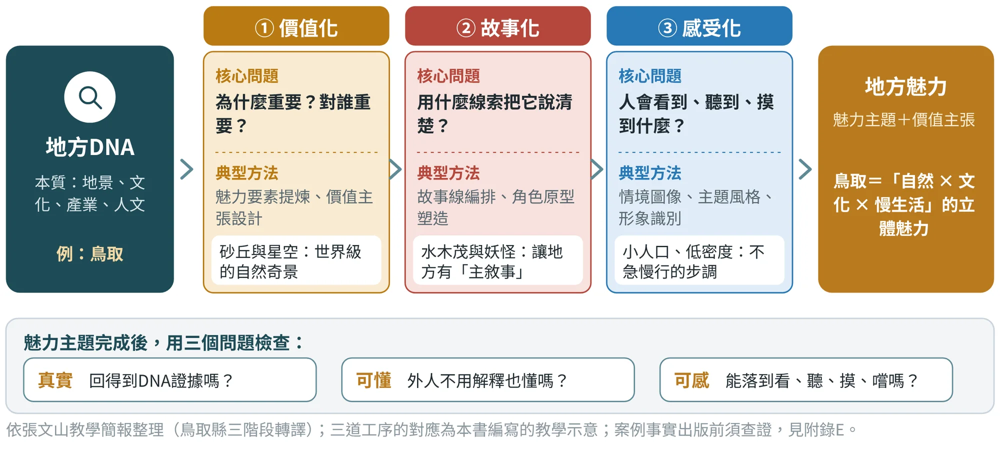
完成三道工序後，會得到兩個東西：幾個魅力主題（建議3到5個，太多就沒有重點），以及一句價值主張，說明這個地方「是什麼樣的地方」。簡報中的三個案例，都用同一種句型：
- 日本。鳥取＝「自然 × 文化 × 慢生活」的立體魅力。
- 馬來西亞。居鑾＝「一座因鐵道而生、因生活而精彩的跨文化城市」。
- 馬來西亞。怡保＝「Ipoh — A City Brewed by Nature, Culture & Heritage」。
三句話都有一個共同點：它們不是把所有特色列出來，而是把幾個DNA組合起來，形成一個立體的印象。
從三道工序到四個方向：加上「可共享化」
作者的易讀版把魅力轉譯整理成四個方向：價值化、故事化、感受化與可共享化。前三個就是上面的三道工序；第四個「可共享化」處理的是另一個問題：這份魅力怎麼讓不同的人，在尊重地方的前提下進入？圖3.3把四個方向放在一起，並為每一個方向附上一個檢查問題。
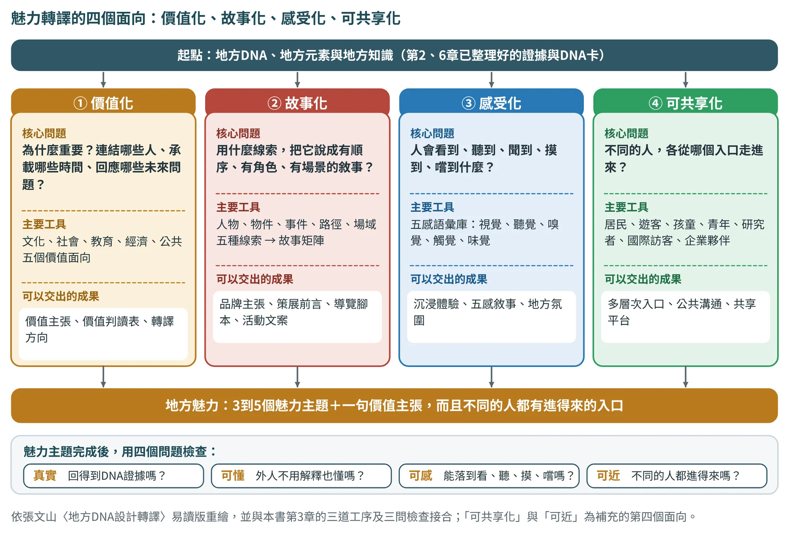
價值化：五個面向，不能只用空泛形容詞
價值化是魅力的第一步：把地方元素從「存在」，轉為「值得被理解」。一條老街不只是老建築的集合，而可能承載商貿發展、移民記憶、地方飲食、手工技藝與公共生活；一項農業副產物不只是廢棄物，也可能是循環設計與地方產業創新的起點。判讀時，至少從下面五個面向（表3.2）各問一次。
| 價值面向 | 關注什麼 | 可以問的問題 | 對應的本書工具 |
|---|---|---|---|
| 文化價值 | 歷史、象徵與認同 | 它承載什麼歷史與象徵？居民怎麼認同它？ | DNA卡（2.6）、文化語彙（第7章） |
| 社會價值 | 社群關係、居民參與與地方凝聚 | 它連結哪些人？能促成哪些合作？ | 利害關係人圖（6.6）、居民檢核（6.4） |
| 教育價值 | 地方知識能否被學習與傳承 | 誰能學？用什麼方式學？ | 工作坊、導覽（第11章） |
| 經濟價值 | 能否形成地方工作、商品、市場與產業鏈 | 誰能因此有工作或收入？誰負責維運？ | 商品設計（第10章） |
| 公共價值 | 能否成為不同使用者共同理解與共享的地方資產 | 誰都可以使用嗎？使用規則是什麼？ | 識別治理（9.7）、權利與授權（第15章） |
五個面向依張文山〈地方DNA設計轉譯：從地方知識萃取到永續設計實踐的方法論〉（易讀版，2026年7月）整理；「對應的本書工具」為本書編排。
價值化最難的地方，是不能只用「很有特色」「很有溫度」「很有文化」這類空泛的形容詞，因為它們撐不起任何設計判斷。真正的價值化要能說清楚四件事：這個元素為什麼重要？它連結哪些人？它承載哪些時間？它能回應哪些未來的問題？寫不出具體內容的，就回到第5、6章補證據。
故事化：五條線索與故事矩陣
故事化不是虛構，而是把地方知識組織成有順序、有角色、有場景、有轉折的敘事。地方故事可以從五種線索切入：
- 人物線： 居民、職人、耆老、青年、移民、旅人，或集體角色。
- 物件線： 工具、食物、材料、器具、照片、交通工具或信仰物件。
- 事件線： 災害、轉型、節慶、政策、產業變化或社群行動。
- 路徑線： 人如何抵達、移動、停留與離開。
- 場域線： 故事在哪些空間發生，例如車站、市場、廟埕、港口、農田、工廠、老街或學校。
故事矩陣是把這些線索系統化的工具（表3.3）。矩陣建立之後，品牌主張、策展前言、導覽腳本、短影音企劃、活動文案與展示設計，就有了共同的敘事基礎，不會各說各話。表中以崙背為例，內容全部來自公開資料，是填寫方式的示範，不是田野結果。
| 欄位 | 要回答的問題 | 崙背示範的寫法示範假設 |
|---|---|---|
| 核心主題 | 這個故事要讓人理解什麼？ | 夜裡的火光與共同巡行：一個庄頭如何在夜裡聚在一起 |
| 主要角色 | 誰在故事裡？ | 活動保存者（水汴頭崇賢寺）、庄民與孩童；實際名單須田野確認待確認 |
| 關鍵物件 | 哪些物件能承載故事？ | 竹火把（澹仔火） |
| 場景節點 | 故事在哪裡發生？ | 廟埕與庄頭的巡行路徑；現址須現場確認待確認 |
| 衝突轉折 | 遇到什麼困難或轉變？ | 登錄為縣級民俗之後，如何傳承而不變成表演；須與居民討論 |
| 預期感受 | 讀者離開時帶走什麼感受？ | 溫暖、共同、慢下來 |
| 一句話主張 | 一句話說出來 | 最後才寫，由前六欄歸納，並交居民檢核；不先於證據 |
欄位依張文山〈地方DNA設計轉譯：從地方知識萃取到永續設計實踐的方法論〉（易讀版，2026年7月）整理；崙背內容依公開報導（〔崙2〕〔崙3〕〔崙28〕）整理，為教學示範。
感受化與可共享化：讓人走得進去
感受化的任務，是把地方價值轉成可以感知的情境：地方如何被看見、聽見、聞到、摸到、吃到、走過？工具是「五感語彙庫」（做法見7.2節的五感漫步）。視覺包含色彩、光線、材料、圖紋與視線焦點；聽覺包含環境聲、勞動聲、交通聲、祭儀聲與地方語言的節奏；嗅覺包含食物、植物、海風、土壤、木材或工廠的氣味；觸覺包含材料肌理、溫度、重量、步行質感與手作感；味覺連結地方飲食、物產與節慶餐食。
五感不是裝飾，而是地方敘事的媒介。鐵道地方的聲景，可能比圖像更能喚起移動的記憶；農村的泥土氣味與作物味覺，可能比標誌更能傳達地方性；宗教場域的聲音、光線、人群流動與香氣，可能共同構成地方的精神氛圍。
可共享化則要避免兩種失敗：魅力只停留在內部人才懂的密語，或為了迎合外部而失去脈絡。做法是替不同的人設計不同層次的入口（表3.4）：有人用一張地圖理解地方，有人用一場導覽走進地方，有人用工作坊參與地方，有人用一件商品把地方帶回日常。可共享化不是降低地方的深度，而是替地方搭一座橋：讓外來者可以靠近，也讓地方人重新看見自己。
| 使用者 | 進入地方的方式 | 可以設計的入口 |
|---|---|---|
| 居民 | 重新看見熟悉的日常 | 社區地圖、故事牆、共創工作坊（5.8節） |
| 遊客 | 在短時間內理解地方 | 導覽路線、摺頁、數位導覽（11.8節） |
| 孩童與學生 | 用探索與動手理解 | 食農體驗、工藝課程、學習單 |
| 青年與返鄉者 | 找到參與與工作的入口 | 工作坊、市集、實習與合作計畫 |
| 研究者與國際訪客 | 需要脈絡與可查證的資料 | 多語導覽、可公開的資料庫與紀錄 |
| 企業與合作夥伴 | 把合作與永續目標接起來 | 材料合作、ESG專案（第16章） |
入口類型依張文山〈地方DNA設計轉譯：從地方知識萃取到永續設計實踐的方法論〉（易讀版，2026年7月）整理；各例為本書示意。
3.3地方設計：把魅力落地#
魅力要被看見、被使用，才算完成。簡報的三個案例，在「地方設計」一欄都列出了五種落地形式（圖3.4）：空間與場域、文化與產品、體驗與路線、節慶與活動、永續策略。
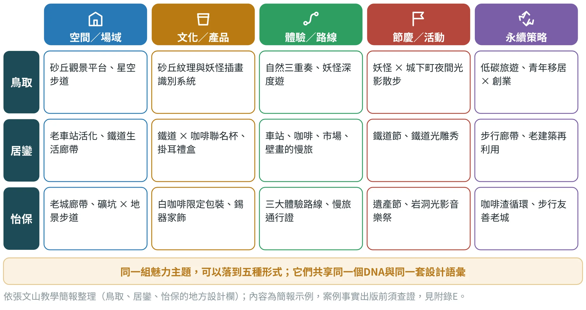
這張圖有兩個提醒。第一，不必五種都做。一個專案通常只能把一到兩種做深，其他留作後續；本書的重心放在「文化／產品」（第10章）與「體驗／路線」（第11章）兩種，因為它們最適合在一個學期內完成並驗證。第二，五種形式要共用同一套DNA與設計語彙。如果商品用一套視覺、遊程又用另一套，遊客就看不出這是同一個地方。
設計形式選擇：四類成果各自要先問什麼
第二篇的方法，把重心放在商品與遊程；作者的易讀版則從另一個角度，把設計落地的成果分成四類，並說明每一類在選用之前要先問的問題（表3.5）。這也是十個實作階段中第7階段「設計形式選擇」（4.3節）的判斷依據：先看地方有什麼條件，再決定做什麼形式，而不是先決定要做商品。
| 設計形式 | 先問的問題 | 設計重點 | 常見的失敗 |
|---|---|---|---|
| 商品與材料 | 地方知識如何被壓縮、攜帶與日常化？ | 同時承載地方材料、生活方式、技術、故事與使用情境。永續觀點下，材料轉譯尤其重要：農業廢棄物、茶渣、蚵殼、稻殼、竹材、漂流木或產業副產物，都可能成為新材料。 | 把地方圖案印在杯子、袋子或餅盒上就結束 |
| 空間與路徑 | 地方故事如何在移動中發生？ | 想清楚從抵達到離開的完整旅程：入口如何建立第一印象、哪裡進入故事、哪裡停留與互動、哪裡形成高潮、哪裡反思與分享。不一定要大規模硬體，導覽標示、聲音節點、社區地圖、光影裝置、店家串聯與小尺度公共家具都可以。 | 只改造單一景點，沒有重新組織人與地方互動的方式 |
| 活動與服務 | 地方價值如何被參與，又如何長期維持？ | 活動集中地方能量：節慶、市集、導覽、工作坊、食農體驗、工藝課程、街區策展與地方論壇。服務設計用使用者旅程、服務藍圖、前台後台與接觸點，說明誰接待、如何收費與回饋、如何處理突發狀況。 | 只追求人潮，活動結束就消散 |
| 數位互動與沉浸 | 科技是不是地方故事的放大器？ | 聲景重現消失的鐵道聲、祭儀聲或勞動聲；AR協助重建歷史場景；光雕與廟宇、辦桌、儀式結合；AI導覽讓不同使用者依興趣進入地方故事。 | 只增加新奇感，換個地方也成立 |
依張文山〈地方DNA設計轉譯：從地方知識萃取到永續設計實踐的方法論〉（易讀版，2026年7月）整理；與本書第10、11、16章的對應見各章。
3.4案例一：鳥取縣，從砂丘到「妖怪」的立體魅力#
鳥取縣是簡報中第一個完整展開的案例。簡報引用了獨立特派員第584集〈日本創生術〉的介紹：鳥取是全日本人口最少的縣，卻因為捕獲的螃蟹數量居日本之冠而被稱為「蟹取縣」；此外，漫畫家水木茂（《鬼太郎》的作者）出身鳥取縣境港市，當地政府與民間團體運用他與作品發展觀光與文化特色，營造「妖怪主題城市」的氛圍。簡報把這個案例歸納為「文化IP在地化應用典範」。
依簡報整理，鳥取的轉譯過程可以畫成下圖（圖3.5）：
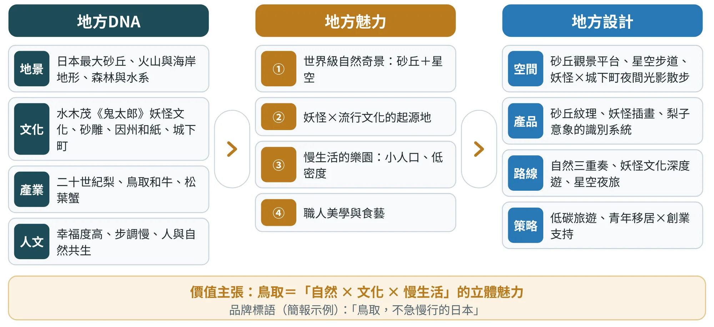
補查：簡報之外，縣政府資料能支持什麼？
簡報給了鳥取一條完整的鏈。本版在2026年10月19日另外查閱縣政府的公開頁面〔鳥2〕〔鳥3〕〔鳥4〕與百科條目〔鳥5〕，看鏈上每一環有哪些事實可以互相支持。能支持的有：砂丘的砂由千代川搬運、經風力堆積而成，2009年的條例禁止在砂丘上畫字或留下記號；水木茂出身境港，境港有一百座以上妖怪銅像組成的水木茂之路；縣政府以「星取縣」宣傳星空，並稱在環境省的全國星空觀察中可見度居全國第一；因州和紙與絣織則有傳統工藝資料。
需要謹慎的有四處：第一，簡報在永續策略裡提到的「美山式農村復興」，美山位於京都府，不在鳥取縣，要先確認簡報想說的是什麼待確認；第二，「幸福度高」沒有出處；第三，星空「第一」的調查年份未載；第四，水木茂之路的累計人次須查報導原件。這四處都不影響鳥取是個好的教材，只是提醒：連簡報也要用證據矩陣的方法讀。
這個案例教了什麼。 「命名」要有成因：鳥取把「蟹取縣」「星取縣」「漫畫王國」做成品牌，是因為背後有可查的蟹產量、星空觀察與漫畫家出身地；缺的是把「慢生活」也補上證據。（AI概念模擬圖集見附錄G.3）
3.5案例二與三：居鑾的鐵道，怡保的錫礦與咖啡#
居鑾（Kluang）與怡保（Ipoh）是簡報中的兩個馬來西亞案例。居鑾已在第1章（圖1.3）看過它如何從一棟老火車站走向五類DNA。這裡把兩個案例放在一起，看它們如何完成後面兩個階段（表3.6）。
| 階段 | 居鑾（鐵道文化） | 怡保（錫礦與美食文化） | 共同的結構 |
|---|---|---|---|
| 地方DNA | 歷史（英殖民鐵道、百年車站）、城市結構（市中心由車站向外擴散）、社會（跨族群、鐵道員工家庭）、產業（咖啡、鐵道周邊市場）、生活（車站是日常聚集中心） | 歷史（錫礦中心、殖民城市格局）、自然（喀斯特洞穴、溫泉）、城市（老城區）、美食（白咖啡、芽菜雞）、產業與工藝（錫器）、社會（多元文化交織） | 先分類，再找類與類之間的關係 |
| 地方魅力 | 鐵道 × 生活；咖啡 × 鐵道的跨文化魅力；多族群共生的故事；鐵道青年文化復興；慢旅 | 錫礦 × 老城 × 白咖啡；石灰岩的自然劇場；多元文化之城；鐵道 × 殖民建築；美食 × 生活的慢城市 | 3到5個主題，每個都是兩三個DNA的組合 |
| 價值主張 | 因鐵道而生、因生活而精彩的跨文化城市 | A City Brewed by Nature, Culture & Heritage | 一句話，對外吸引、對內認同 |
| 地方設計 | 老車站活化、鐵道生活廊帶、鐵道 × 咖啡聯名杯、鐵道聲景商品、鐵道慢旅步道、鐵道節、光雕秀、步行廊帶與老建築再利用 | 老城廊帶、礦坑與地景步道、白咖啡限定包裝、錫器家飾、城市色彩、三大體驗路線與慢旅通行證、遺產節與岩洞光影音樂祭、咖啡渣循環再利用 | 五種形式並用，共享同一套DNA與視覺語彙 |
資料依張文山教學簡報整理（居鑾鐵道文化的三階段轉譯；怡保的錫礦產業與美食文化）；簡報另提及參考斗南「步行廊帶」與低碳方案。案例事實出版前須查證（附錄E）。
補查：兩座馬來西亞城市有哪些事實可以互相支持？
居鑾的車站在1909年通車，舊站房被列為遺產建築，站內的Kluang Rail Coffee在2022年獲馬來西亞紀錄大全認定為「最老的鐵道咖啡店」〔居3〕；後一項靠百科轉述，紀錄的原件須查。作者的兩份簡報互相對得上〔居1〕〔居2〕，但有一處前後不一：DNA欄列的族群是日裔、馬來與華人，魅力欄列的是馬來、華人與印度，須田野確認。怡保則在1880年代因錫礦快速成長，1892年大火後重建為格網，現在的站房在1917年啟用，莫臥兒復興風格，俗稱「怡保的泰姬瑪哈陵」〔怡2〕〔怡3〕；白咖啡的起源則有海南移民說與1937年新源隆說，「發源地」要寫得謹慎〔怡4〕。
居鑾論壇：給鐵道城市的三個台灣經驗
作者在2025年11月21日的居鑾鐵道節國際論壇上〔居2〕，把台灣的鐵道再利用經驗整理成文化保存、空間活化與社會參與三軸（圖3.6）：台北機廠完整紀錄舊廠房、維修工藝與機具；勝興車站結合隧道與鐵道自行車，帶動青年返鄉；菁桐與平溪線由居民共同維護老車站與導覽。對居鑾的建議，是鐵道文化資產盤點系統、「舊軌道×新用途」，以及「歷史採集、紀錄志工與共創工作坊」。這些都是建議，不是居鑾已完成的成果；放在這裡，是因為它示範了「借別人的經驗」時，要把建議層級和實施成果分開寫。
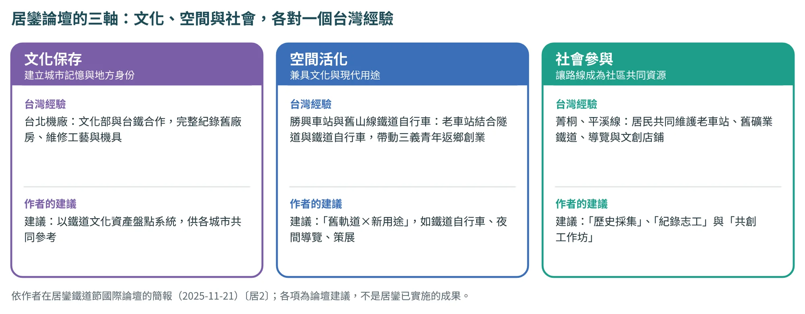
3.6案例的共同結構#
把鳥取、居鑾與怡保放在同一張表上（圖3.7），可以看出它們共享一條相同的結構：
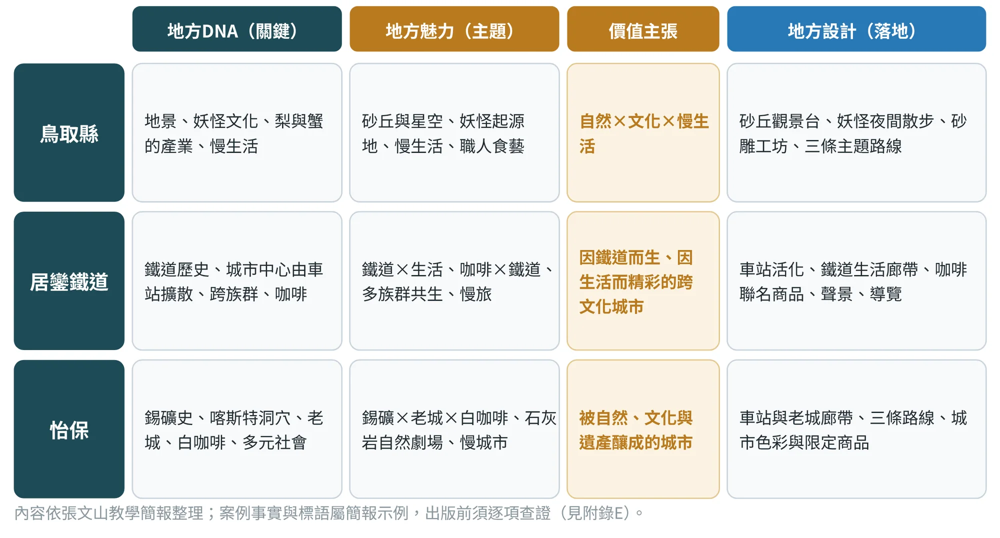
- 先分類，再找關係：DNA先分成幾類，再看類與類之間如何互相連結。
- 魅力是DNA的「組合」：魅力主題不是單點，而是兩三個DNA的交會（自然 × 文化 × 慢生活；錫礦 × 老城 × 白咖啡）。
- 價值主張是一句話：既要讓外人想來，也要讓居民點頭。
- 設計是多形式的組合：空間、產品、路線、活動與永續策略並用，而且彼此共用DNA。
- 永續策略來自DNA，而非貼標籤：步行廊帶、老建築再利用、咖啡渣循環，都是從地方本來就有的東西長出來的（第16章會專章說明）。
再看六個國內案例
國外三案的共同結構是「鏈條完整」：從DNA到設計項目，每一欄都對得上。國內六個案例的材料不同，有作者的設計稿，有縣府與鎮公所的提案書，也有只靠公開報導的埔里，所以它們的共同結構不是鏈條，而是「優點和缺口落在不同的地方」（表3.7）。
| 案例（資料基礎） | 價值主張 | 設計項目的狀態 | 鏈條上的斷點 |
|---|---|---|---|
斗南 作者簡報與估算文件＋公開資料 | 從鐵軌出發，走進生活的廊帶（From the rails to everyday life） | 已實施3、計畫中1、示範假設1 | 簡報沒有寫出魅力主題；品牌群與廊帶如何互相導流，未見說明 |
古坑 作者設計說明卡與設計稿＋公開資料（沒有田野紀錄） | （文件未見價值主張） | 設計稿2 | 上游缺：DNA證據→五感；魅力主題與價值主張未見 |
土庫 縣府與鎮公所提案書＋作者簡報＋公開資料 | 大環境與小地方：以雙語學旅，讓世界走進土庫的日常（提案願景） | 提案4、待確認1 | 旅店與可可沒有上游DNA的理由；最強的DNA（進香中繼）沒有成為主軸 |
北港 鎮公所提案簡報＋公開資料 | 讓來進香的人，也成為住下來走一走的旅人（提案主張「香客轉遊客」） | 已實施3、提案2 | 芽菜的資金不是轉譯；牛墟與花生、大餅尚未進入設計項目 |
鹿谷 三份提案文件（2021、2022、2026） | 提案文字：「五感體驗傳遞鹿谷『茶』DNA」（茶席文化館）；凍頂烏龍茶品牌振興 | 提案3、前期成果＋提案1、已實施1 | 田園風箏節、茶咖智販機與茶DNA的關係未說明 |
埔里 公開網路資料（含廣編稿）；沒有作者或提案文件 | 因水而生的酒、紙與社區（教學示範的假設主張；須與居民與業者共同檢核） | 已實施3、示範假設1 | 三條鏈各自為政，沒有整體的魅力主題 |
價值主張依各案例的提案文件、簡報或設計說明卡；古坑的設計說明卡沒有寫價值主張。「狀態」的八種標籤見5.4節。來源編號見附錄F.6。
把六案和前面的三案並排，大致出現三種典型。鏈條完整、證據偏薄：鳥取、居鑾、怡保的每個設計項目都指得回一個魅力主題，卻多半只有簡報一條來源。下游完整、上游空白：古坑的九色與五套紋樣有精確的規格，但設計說明卡沒有田野或文獻來源，這在九個案例中是設計層最完整、證據層最空的一個。單點扎實：北港（返鄉青年的旅人市集）與埔里（桃米的社區重建）在社會參與有紀錄，鹿谷的窯火再生有量測數據，其他格子卻停在意圖。
這三種典型提醒我們：一個案例的好，不能只看一格。要知道它好在哪裡、缺在哪裡，需要同一把尺。
同一把尺：六道驗證（V1至V6）
本版用六道驗證檢視每個案例（圖3.8）：V1證據可追溯、V2 DNA成立、V3轉譯鏈完整、V4設計一致、V5永續四軸（文化適切、社會參與、經濟可行、環境永續各評一格）、V6治理與倫理。它們不是新發明的工具，而是把本書前面各章的檢查，收成一張可以逐項打勾的卡（表3.8）：V1對應證據（第5章），V2對應DNA（第2、6章），V3對應轉譯鏈（3.1至3.3節），V4對應視覺與設計一致（第8至11章），V5對應永續四軸（16.6節），V6對應治理與倫理（9.7節、第15章、18.9節）。
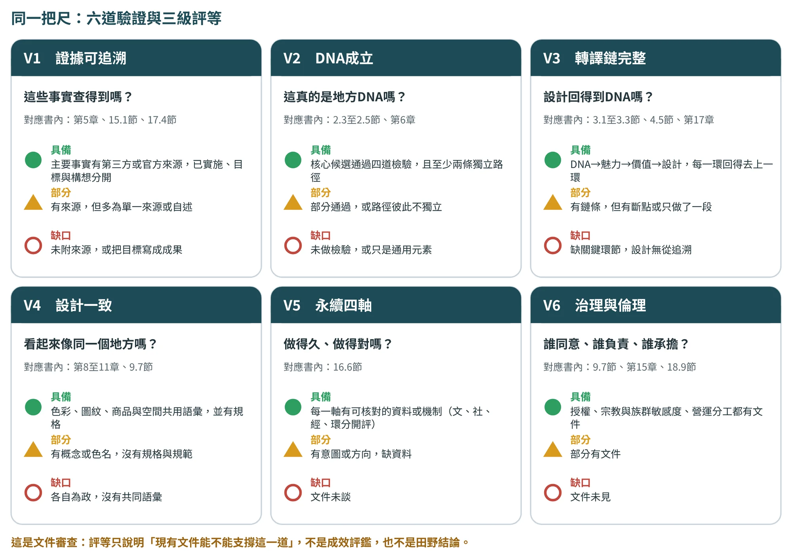
| 驗證 | 問的問題 對應書內 | ●具備 | △部分 | ○缺口 |
|---|---|---|---|---|
V1 證據可追溯 | 這些事實查得到嗎？ | 主要事實有第三方或官方來源，已實施、目標與構想分開 | 有來源，但多為單一來源或自述 | 未附來源，或把目標寫成成果 |
V2 DNA成立 | 這真的是地方DNA嗎？ | 核心候選通過四道檢驗，且至少兩條獨立路徑 | 部分通過，或路徑彼此不獨立 | 未做檢驗，或只是通用元素 |
V3 轉譯鏈完整 | 設計回得到DNA嗎？ | DNA→魅力→價值→設計，每一環回得去上一環 | 有鏈條，但有斷點或只做了一段 | 缺關鍵環節，設計無從追溯 |
V4 設計一致 | 看起來像同一個地方嗎？ | 色彩、圖紋、商品與空間共用語彙，並有規格 | 有概念或色名，沒有規格與規範 | 各自為政，沒有共同語彙 |
V5 永續四軸 | 做得久、做得對嗎？ 16.6節 | 每一軸有可核對的資料或機制（文、社、經、環分開評） | 有意圖或方向，缺資料 | 文件未談 |
V6 治理與倫理 | 誰同意、誰負責、誰承擔？ | 授權、宗教與族群敏感度、營運分工都有文件 | 部分有文件 | 文件未見 |
六道驗證與判準為本書編排，用於九個案例的桌面審查；V5分文化、社會、經濟與環境四格各自評等，所以一張卡共九格。
九個案例的完整驗證卡集中在17.6節。本章先用這把尺量鳥取、居鑾與怡保（3.4、3.5節），後面各章講到對應的方法時，會再把相關的案例拿出來用一次。
案例啟示：六種常見的轉譯路徑
三個案例各有各的條件，也各長出不同的路。作者的易讀版把常見的轉譯路徑整理成六種類型（表3.9），讓讀者對照自己的地方工作。它不是公式：不同地方條件不同，轉譯路徑也不同，一個專案往往是兩種以上的組合。
| 轉譯路徑 | 適用的地方條件 | 轉譯重點 | 要守住的界線 | 本書對照 |
|---|---|---|---|---|
| 命名與品牌型 | 有明確物產或文化資產，但缺乏鮮明的公共記憶 | 用命名、品牌主張與視覺系統，把最具代表性的資源濃縮成容易傳播的語言 | 命名不能憑空創造；沒有真實DNA支撐，就是空洞行銷 | 鳥取（3.4）；土庫、北港（兼，3.6） |
| 鐵道與路徑型 | 鐵道、老街、河岸、港口、山徑等具路徑性的場域 | 導覽路線、聲景、故事地圖、節點策展與慢行體驗 | 避免把鐵道博物館化，要讓它連結當代生活 | 居鑾（3.5）、第11章；斗南（3.6、11.6） |
| 色彩與圖紋型 | 地景、建築、信仰或產業符號強烈 | 建立可共享的視覺語言：色彩與圖紋系統 | 缺少使用規範，容易過度商業化或風格混亂 | 東港（9.6）、第8、9章；怡保、古坑（3.5、9.5） |
| 工藝與商品型 | 傳統工藝、地方物產與職人技術 | 替技術找到當代的使用情境，先理解當代生活需求 | 不是讓傳統變得廉價可愛，而是讓技術與精神仍被需要 | 竹山、崙背（第10章）；鹿谷（16.4） |
| 循環材料型 | 地方剩餘物、農業副產物、加工廢棄物與自然材料 | 材料設計、產品開發與ESG合作；設計不只表現地方，也修復地方 | 宣稱要有數據與認證，不能只貼標籤 | 官田、茶葉渣（16.2、16.3）；埔里、鹿谷（11.10、16.4） |
| 沉浸體驗型 | 宗教場域、節慶、歷史場景與地方飲食 | 結合聲景、光影、互動與敘事節奏 | 科技不能服務地方，就只是可替換的效果 | 遊程與數位導覽（11.8）；土庫、北港（15.3） |
類型依張文山〈地方DNA設計轉譯：從地方知識萃取到永續設計實踐的方法論〉（易讀版，2026年7月）整理；「本書對照」欄為本書編排，外部案例的事實須於出版前查證（附錄E）。
九個新增案例落在哪一種路徑
表3.9的六種路徑，原本只有少數案例對照。把九個新增案例放進去（圖3.9），多數案例同時帶有兩種路徑：斗南是鐵道與路徑型，又以茶渣與倉庫再利用帶出循環材料型；土庫與北港是沉浸體驗型，同時靠「北港顯，土庫定」這類俗諺與「香客轉遊客」的主張走命名與品牌型；鹿谷是工藝與商品型（凍頂茶），窯火再生則是循環材料型；埔里相反，是循環材料型（手工紙用在地材料）兼工藝與商品型。
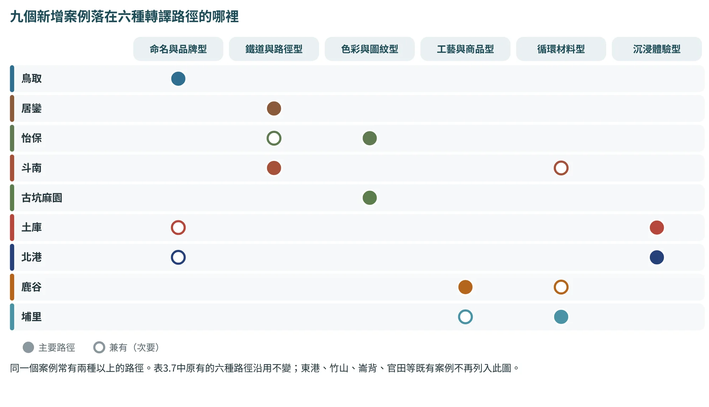
3.7可追溯的轉譯鏈：每一個設計決定都要有出處#
本書和一般設計教科書最大的不同，是強調可追溯：設計裡的每一個決定，都要能一路回頭指向魅力主題、DNA卡與原始證據。圖3.10用崙背示範的竹編火把小夜燈，把這條鏈縮成六個節點：證據、DNA、語彙、視覺、商品與驗證。
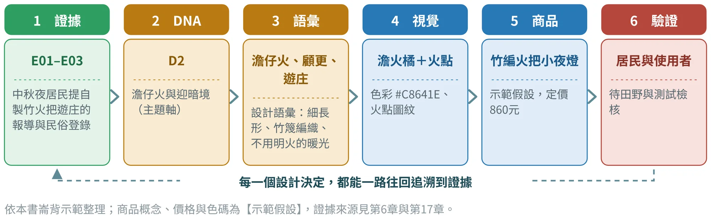
可追溯有三個好處：第一，設計理由說得清楚，不會被問倒；第二，出了問題可以知道往回修哪一步；第三，AI協助的部分也可以被檢查（第13章）。後面第4章會把這條鏈擴充成完整的「方法論全景」，第17章則用竹山與崙背兩個案例，走完整整一遍。
概念座標與工作座標
本章的「DNA → 魅力 → 設計」是概念座標，告訴你每個階段在做什麼；第二篇的六個階段是工作座標，告訴你每一週要交什麼成果。兩者的對應如下表（表3.10）。
| 概念座標（本章） | 工作座標（第二篇） | 主要章節 |
|---|---|---|
| 地方DNA（理解地方） | ① 證據蒐集 ② DNA萃取 | 第5章、第6章 |
| 地方魅力（表達地方） | ③ 感知與語意 ④ 視覺轉譯 | 第7章（五感、文化語彙、設計語彙）、第8章（色彩）、第9章（圖紋） |
| 地方設計（實踐地方） | ⑤ 應用原型 | 第10章（商品）、第11章（遊程） |
| （貫穿全程的檢驗） | ⑥ 驗證迭代 | 第12章 |
這個對應是本書的編排方式：魅力的「價值化、故事化、感受化」，在工作上具體化為文化語彙、五感、設計語彙、色彩與圖紋，因為它們正是把價值與故事變成可感受之物的工具。
3.8LGSD：從地方DNA到面向未來的永續設計#
如果地方DNA回答的是「地方有什麼」，三階段轉譯回答的是「怎麼走到設計」，那還需要一個總括的立場，說明這條路為什麼這樣走、走到哪裡才算完成。作者把這個立場稱為「地方生成式永續設計方法論」（Local Generative Sustainability Design，簡稱LGSD）。簡單說，LGSD相信地方不是等待外部拯救的地方，而是本來就藏著解方的地方；設計者要做的，不是把流行風格套上去，而是陪地方把自己的力量找回來，並且讓這股力量可以面向未來。
LGSD的核心想法是：地方不是被動接受設計的對象，而是能夠自己生成設計的知識源。它和一般做品牌、做景觀美化、做活動包裝不太一樣：不是只追求地方看起來更漂亮，而是希望地方因為設計，更清楚認識自己，也更有能力面對未來。關鍵不在表面的形象更新，而在地方知識的重新整理、重新表達與重新使用。
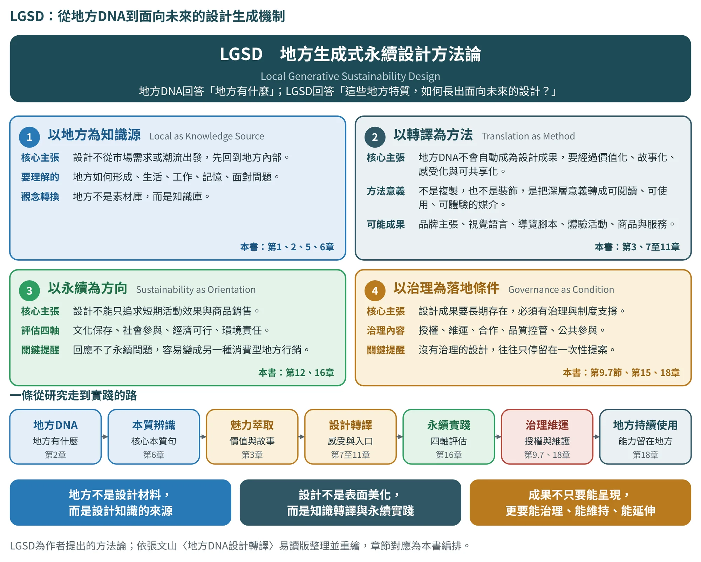
LGSD的精神可以歸納為四個面向（表3.11）。它們不是四個並列的口號，而是一條鏈：先承認地方是知識源，再用轉譯的方法把知識變成設計，以永續為判準，並以治理讓成果留得下來。
| 精神 | 核心主張 | 它要求你做什麼 | 本書位置 |
|---|---|---|---|
| 以地方為知識源 | 設計不從市場需求或潮流出發，先回到地方內部，理解地方如何形成、生活、工作、記憶與面對問題。地方不是素材庫，而是知識庫 | 先證據、後設計；每一筆資料記下來源與知識持有者 | 第1、2、5、6章 |
| 以轉譯為方法 | 地方DNA不會自動成為設計成果，要經過價值化、故事化、感受化與可共享化。轉譯不是複製，也不是裝飾，而是把深層意義轉成可閱讀、可使用、可體驗的媒介 | 每一個設計決定都能回溯到魅力主題、DNA卡與證據 | 第3、7至11章 |
| 以永續為方向 | 設計不能只追求短期活動效果與商品銷售，要思考文化保存、社會參與、經濟可行與環境責任；回應不了永續問題，容易變成另一種消費型地方行銷 | 用四軸評估，並把指標寫成設計規格，而不是貼標籤 | 第12、16章 |
| 以治理為落地條件 | 成果要長期存在，必須有授權、維運、合作、品質控管與公共參與。沒有治理的設計，往往只停留在一次性提案 | 規劃視覺治理、營運治理與影響評估，並說明誰負責 | 9.7節、第15、18章 |
四個精神依張文山〈地方DNA設計轉譯：從地方知識萃取到永續設計實踐的方法論〉（易讀版，2026年7月）整理；「它要求你做什麼」與「本書位置」為本書編排。
LGSD並不是在本書的方法之外另加一套流程，而是用來說明整套方法的立場：第一、二章與第二篇的前段，落實「以地方為知識源」；本章與第7至11章，落實「以轉譯為方法」；第16章落實「以永續為方向」；9.7節、第15章與18.9節，落實「以治理為落地條件」。所以，地方DNA設計轉譯不是單一技法，而是一條從研究到實踐的流程：先辨識地方本質，再萃取地方魅力，最後把魅力轉化為能被執行、能被維護，也能被地方繼續使用的設計。
3.9AI協作：讓AI幫你比較與檢查，不要讓它替你寫標語#
魅力轉譯最容易被AI「寫得太漂亮」。請把AI放在「比較、檢查、發散」的位置，而不是「寫出最終主題」的位置：
我會提供已完成的地方DNA卡（含編號、證據與來源）。請依「價值化→故事化→感受化」提出3–5個魅力主題候選，每個主題必須：①標明依據的DNA卡編號；②只使用DNA卡中已有的地方事實，不得新增；③用「看到、聽到、摸到什麼」說明感受化。再用「真實（回得到DNA證據）、可懂（外人不用解釋也懂）、可感（能落到五感）」三項檢查每個主題，並列出「需居民檢核的問題」。最後不要替我選最終主題，也不要寫品牌標語。
W3為本書建議的提示詞；各提示詞的索引與P、U系列全文見附錄B。標語與最終主題由你和居民共同決定。